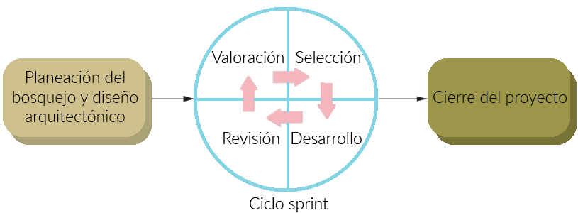

Método scrum
Para un administrador de proyectos es muy complicado el método ágil, ya que es difícil medir tiempos y presupuestos cuando no se tienen todos los requerimientos de antemano. Es por esto que los sistemas deben administrarse usando de la mejor manera el tiempo y los recursos humanos(el talento) disponibles. Aquí es donde entra el método scrum, que aunque es un método ágil per se, puede utilizarse para administrar un proyecto bajo programación extrema.

Existen tres fases claras en el desarrollo con el método scrum:
Planeación del bosquejo: Aquí se establecen los objetivos generales del proyecto y su diseño general.
Ciclo Sprint: En cada ciclo se desarrolla una versión, estos son de longitud de tiempo fija. En la fase de valoración se establece el trabajo a realizar del proyecto, las prioridades y los riesgos. En la selección se incluye a todo el equipo para trabajar con el cliente, esto para seleccionar las mejores funcionalidades para el próximo sprint. Una vez que se tiene el trabajo el equipo se organiza para sacarlo adelante, se asignan prioridades y se tienen pequeñas reuniones diarias para mostrar los avances y estar al tanto del proyecto en general. En esta etapa solo el “maestro del Scrum” habla con el cliente y mantiene un canal de comunicación entre todas las partes involucradas en el proyecto. Al final el trabajo se revisa y se procede a liberar la versión.
Por último tenemos el cierre del trabajo, se incluye la documentación requerida y los manuales de usuario.
La idea central del Scrum es que no hay un administrador, el “maestro del Scrum” actúa más bien como un medio de comunicación, mide el avance del proyecto, y facilita la conversación entre los miembros del proyecto durante las reuniones diarias. Estas reuniones facilitan lo que se le conoce como responsabilidad colectiva. Es por esta colectividad que todos participan en la toma de decisiones, ya sea por una funcionalidad o porque haya que rediseñar el sistema. Entre las ventajas de este método están:
Ya que se desarrolla por tareas con un énfasis en código simple, el producto final es comprensible y manejable.
Un cambio en los requerimientos no atrasa el proyecto
El equipo de desarrollo conoce todo el sistema y puede ayudar en cualquier parte
Los clientes obtienen retroalimentación inmediata y pueden supervisar los avances.
La colectividad motiva a un sentimiento general de terminar el proyecto, lo que también genera confianza con el cliente.
Sin embargo, aún presenta las desventajas de los métodos ágiles. Su implementación en proyectos grandes y en sistemas críticos es complicado porque uno de los requerimientos es que el equipo conozca todo el sistema, algo complicado o incluso imposible en muchos de los sistemas grandes. Muchos tienen sistemas internos imposibles de cambiar o están restringidos por regulaciones, los equipos están dispersos geográficamente.